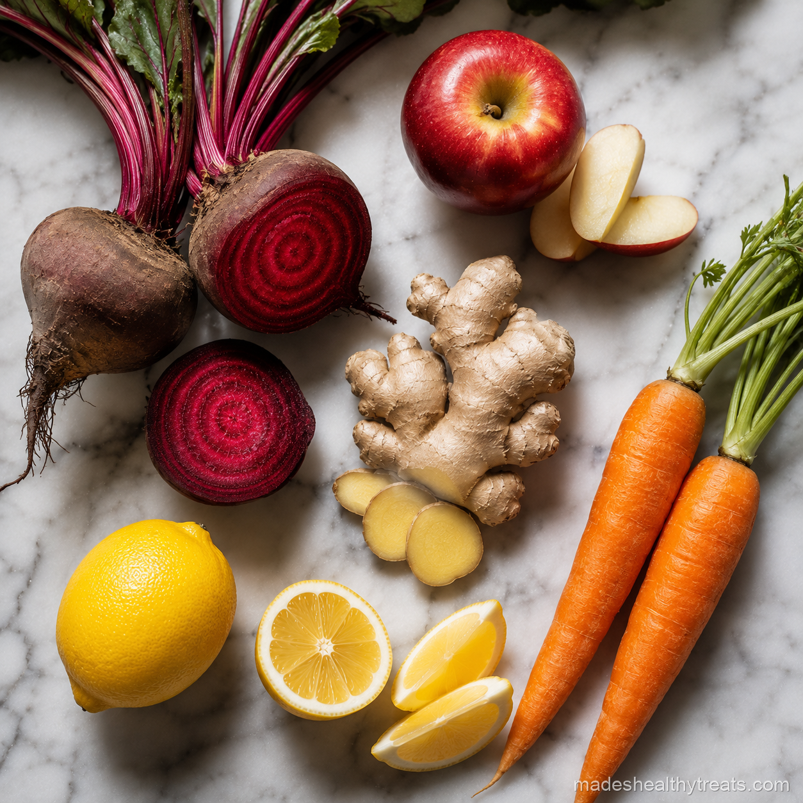

The Beet Juice Benefits That Changed My Mind
I was skeptical about beet juice benefits because beets taste like they were grown directly inside a thunderstorm. I respected them, but I did not crave them. Then I started reading about nitrates, blood flow, and exercise performance, and curiosity won. I made a beet apple ginger juice before my morning walk and waited to see if anything felt different.
Why Nitrates Matter
Beetroot naturally contains nitrates, which the body can convert into nitric oxide. In simple kitchen language, that can help blood vessels relax and support blood flow. That is why beet juice gets talked about for endurance, energy, and blood pressure support.
What I Noticed Personally
I did not turn into an athlete overnight, but I did feel like my walks had more ease. By the end of the first week, I could go a little further without that heavy leg feeling. The change was subtle, but it was enough to keep me interested.
My Beet Energy Juice Recipe
My favorite version uses two beetroots, two apples, two carrots, one inch of ginger, lemon juice, and cold water. I blend everything until deep ruby, strain it well, and drink it cold. The apple and carrot soften the earthiness, and ginger keeps it lively.

I have learned that the best wellness habits are the ones that still feel kind on a normal Tuesday morning.
Who Should Be Careful
If you already have low blood pressure, kidney stone concerns, or take medication that affects blood pressure, I would ask a professional before drinking beet juice daily. Natural does not mean invisible, and beets can be powerful.
How I Make It Taste Good
Lemon is my secret for making beet juice taste clean instead of muddy. Apple helps too, and ginger gives it sparkle. The beet juice benefits are much easier to enjoy when the juice tastes like something you would willingly drink again tomorrow.
The Color Alone Changes My Mood
The color of beet juice changes my mood before I even taste it. That deep red makes the whole kitchen feel more awake. I know color is not nutrition by itself, but colorful produce often brings helpful plant compounds, and beets are a good reminder that healthy food can look dramatic without needing artificial anything. When I pour beet juice into a glass, it feels like proof that simple ingredients can still feel exciting.
How Often I Drink It
I do not drink beet juice every single day. For me, two or three times a week is plenty, especially when I am walking more or want a pre workout boost. I also pay attention to how my body responds because beet juice can be strong. If it makes me feel good, I keep it in the rhythm. If my body wants something lighter, I choose cucumber mint or celery lemon ginger instead. The beet juice benefits feel best when I use them thoughtfully.
One funny thing about beet juice is that it makes me feel committed before I even drink it. You cannot casually make beet juice. The cutting board turns red, the blender turns red, your hands may turn red, and suddenly you are very involved. I kind of love that. It asks me to pay attention, and in a rushed morning, paying attention can be its own kind of nourishment.
I also learned to respect the serving size. A small glass is enough for me, especially when the juice is concentrated and fresh. I do not need a giant jar to receive the beet juice benefits I am looking for. A modest serving before movement feels supportive, and it keeps the flavor from becoming overwhelming.
You Might Also Like

Does a Smoothie a Day Actually Help You Lose Weight? I Tried It for 30 Days
I replaced my rushed breakfast with one green smoothie every morning for 30 days and tracked what really changed.
Read more →
What Happens to Your Body When You Drink Green Smoothies Every Day
I explain the simple body changes I noticed and the science that makes daily green smoothies make sense.
Read more →
The 7 Biggest Smoothie Mistakes That Are Ruining Your Results
I made these smoothie mistakes myself before I learned how to blend for energy, fullness, and real results.
Read more →Made's Note
If beet juice has scared you off before, try it with apple, lemon, and ginger. Sometimes the ingredient you think you dislike just needs better company. When I think about beet juice benefits, I think about real mornings, real kitchens, and the small choices that help us feel at home in our bodies.